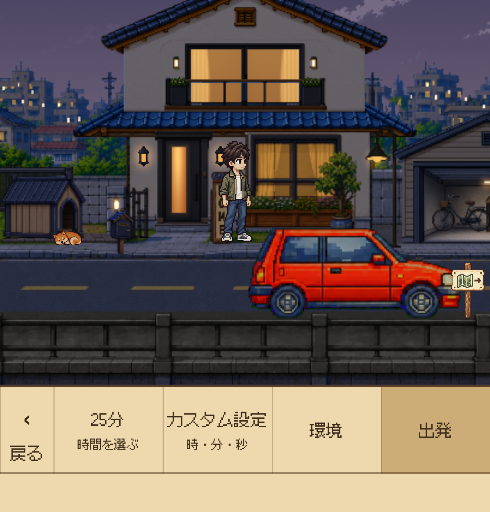
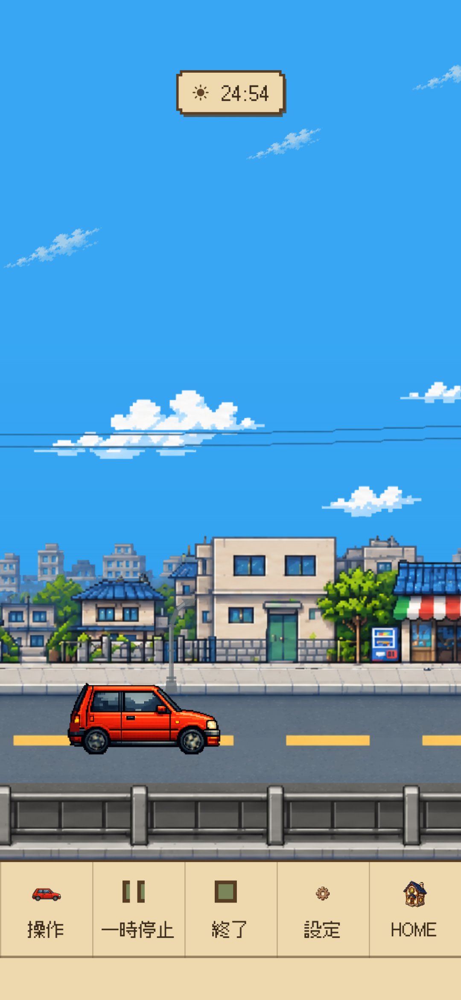
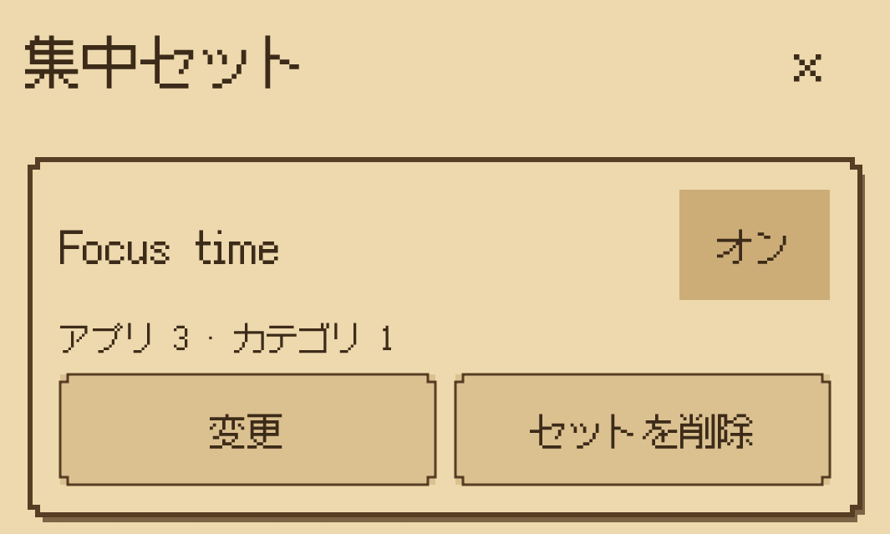
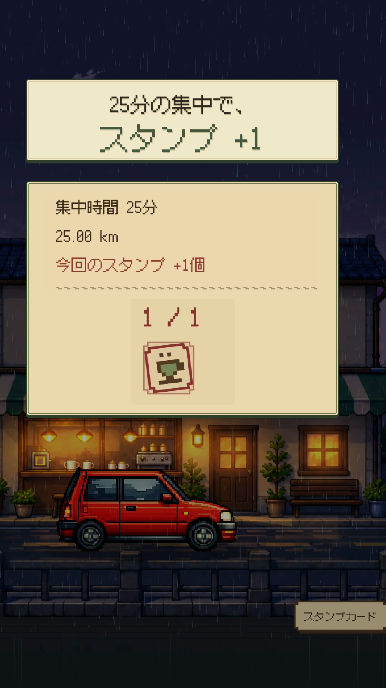
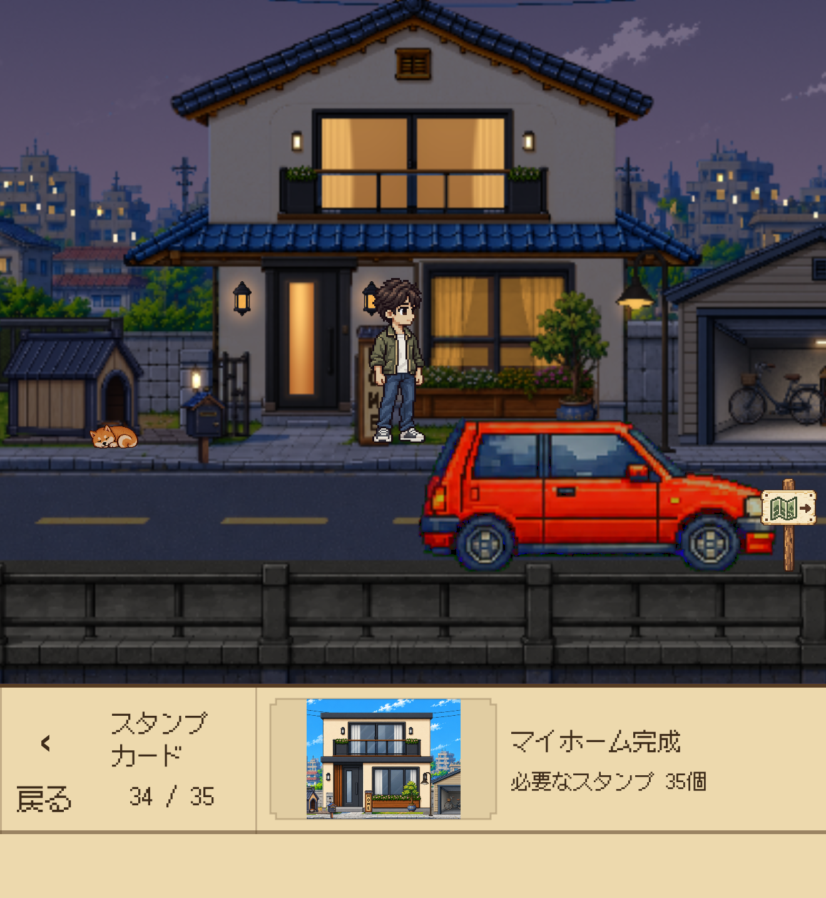
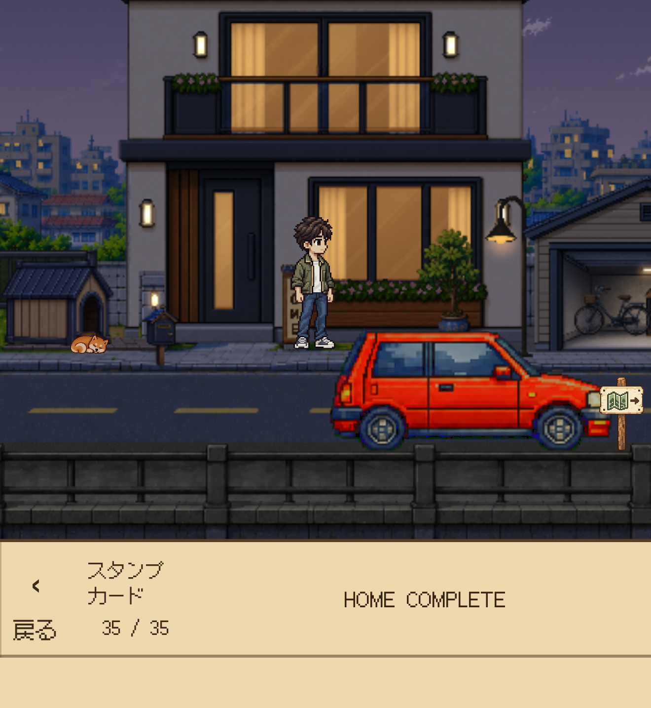

時間を設定 → 出発
Homeでドライブメニューを開き、集中時間を選んで出発します。
勉強・読書・作業を始める、iPhone向け集中タイマー。

Dayroadは、勉強・読書・作業に向き合う時間をつくりたい人のためのiPhone向け集中タイマーです。時間を決めて出発すると、車はドットの街を走り、ユーザーは自分のやることに集中。積み重ねた時間でスタンプを集め、自分でHomeを育てます。
2026年10月23日リリース
iPhone Focus Timer
やることはあるのに始められない、つい別のアプリを開いてしまう。そんな場面で、一回の集中時間を決め、勉強・読書・作業に向き合うきっかけをつくります。

Homeでドライブメニューを開き、集中時間を選んで出発します。

タイマーが進む間、車は自動で走ります。運転操作をせず、自分の作業に集中できます。

選んだアプリやカテゴリをブロックする任意の機能です。スクリーンタイムの許可が必要です。
1.0ではWebサイトのブロックに対応していません。 ロック画面のライブアクティビティで残り時間を確認し、終了通知を受け取れます。対応端末や通知設定により動作は異なります。
車を操作する必要はありません。決めた時間は、自分のやることに向き合うだけ。横から眺める街並みと上から見るドライブ、晴れた昼と雨の夕方が、いつもの集中時間に彩りを添えます。


ドットで描かれた街、流れる景色と音楽。集中するときも、ひと息つくときも、Dayroadが穏やかな背景になります。
集中を終え、累計25分ごとにスタンプを1個獲得。必要な数を集めたらHomeで自分で使い、次の段階を開放します。成長は自動では進みません。

実際の25分集中の完了画面。累計25分につきスタンプを1個獲得します。

次の段階に必要な数を貯め、自分で選んでHomeを開放します。

35段階まで育つHomeを、次の集中を始める小さな目標にする設計です。
集中 → ドライブ → 終了・スタンプ → 自分で開放 → Homeの成長 → 次の集中
累計25分の集中でスタンプを1個獲得。必要な数を貯めて使うと、Homeの次の段階を開放できます。小さな始まりから35段階まで、積み重ねた時間が目に見える変化として残ります。


集中した時間を目に見える変化として残し、次の成長を楽しみにもう一度集中を始める、小さなきっかけをつくる設計です。
Free Driveは時間制限なく、ずっと無料。集中の報酬は獲得できません。
日本の風景を舞台にしたFocus Driveを累計75分まで無料で体験できます。その後はFocus Drive Passの買い切りで継続できます。サブスクリプション、自動更新、体験終了後の自動課金はありません。
パスの対象は現在の日本を舞台にしたFocus Driveです。今後の追加エリアは別売りとなる場合があります。現地価格は購入前にApp Storeでご確認ください。
対応端末と詳しい互換性はApp Storeでご確認ください。
Dayroadの開発者
素材の使用条件は同梱のMEDIA-USE.txtをご確認ください。